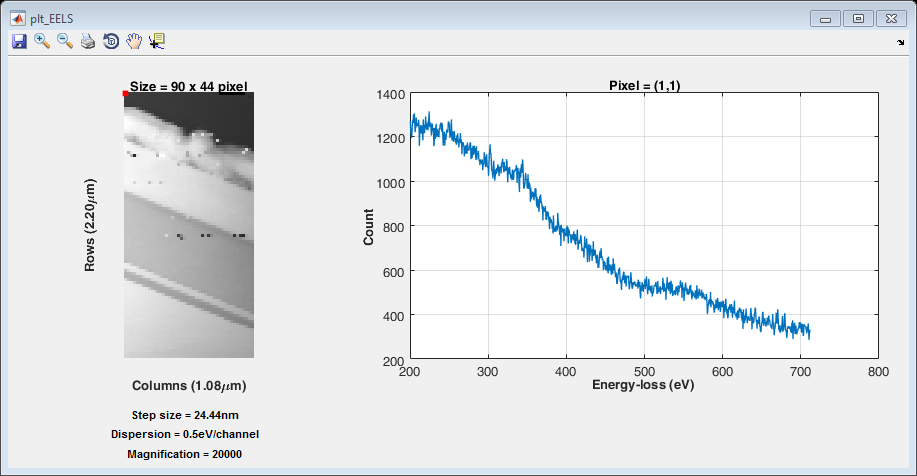

function varargout = plt_EELS(varargin)
gui_Singleton = 0;
gui_State = struct('gui_Name', mfilename, ...
'gui_Singleton', gui_Singleton, ...
'gui_OpeningFcn', @plt_EELS_OpeningFcn, ...
'gui_OutputFcn', @plt_EELS_OutputFcn, ...
'gui_LayoutFcn', [] , ...
'gui_Callback', []);
if nargin && ischar(varargin{1})
gui_State.gui_Callback = str2func(varargin{1});
end
if nargout
[varargout{1:nargout}] = gui_mainfcn(gui_State, varargin{:});
else
gui_mainfcn(gui_State, varargin{:});
end
function plt_EELS_OpeningFcn(hObject, eventdata, handles, varargin)
if(length(varargin)<1)
handles.EELS = readEELSdata;
else
handles.EELS = varargin{1};
end
handles.r = 1;
handles.c = 1;
handles = plt(handles);
handles.output = hObject;
set(handles.output,'KeyPressFcn',@KeyPressCallback);
set(handles.I,'ButtonDownFcn',@ImageClickCallback);
guidata(hObject, handles);
function ImageClickCallback(hObject, eventdata, handles)
handles = guidata(hObject);
axesHandle = get(hObject,'Parent');
coordinates = fliplr(get(axesHandle,'CurrentPoint'));
handles.r = squeeze(round(coordinates(1,2)));
handles.c = squeeze(round(coordinates(1,3)));
if(handles.r > handles.EELS.SI_x)
handles.r = handles.EELS.SI_x;
elseif(handles.r < 1)
handles.r = 1;
end
if(handles.c > handles.EELS.SI_y)
handles.c = handles.EELS.SI_y;
elseif(handles.c < 1)
handles.c = 1;
end
handles = plt(handles);
set(handles.output,'KeyPressFcn',@KeyPressCallback);
set(handles.I,'ButtonDownFcn',@ImageClickCallback);
guidata(handles.figure1,handles);
function KeyPressCallback(hObject, eventdata, handles)
handles = guidata(hObject);
switch get(handles.output,'CurrentKey')
case 'uparrow'
handles.r = handles.r - 1;
case 'downarrow'
handles.r = handles.r + 1;
case 'leftarrow'
handles.c = handles.c - 1;
case 'rightarrow'
handles.c = handles.c + 1;
otherwise
warning('Unexpected key pressed. Use only arrow keys');
end
if(handles.r > handles.EELS.SI_x)
handles.r = handles.EELS.SI_x;
elseif(handles.r < 1)
handles.r = 1;
end
if(handles.c > handles.EELS.SI_y)
handles.c = handles.EELS.SI_y;
elseif(handles.c < 1)
handles.c = 1;
end
handles = plt(handles);
set(handles.output,'KeyPressFcn',@KeyPressCallback);
set(handles.I,'ButtonDownFcn',@ImageClickCallback);
guidata(hObject, handles);
function handles = plt(handles)
axes(handles.axes1);
I = sum(handles.EELS.SImage,3);
handles.I = imshow(uint64(I),[min(I(:)) max(I(:))]);
if((handles.EELS.SI_y*handles.EELS.step_size.y > 1000) && strcmp(handles.EELS.step_size.yunit,'nm'))
xlabel(['Columns (',num2str(sprintf('%.2f',(handles.EELS.SI_y*handles.EELS.step_size.y)/1000)),'\mum)'],'FontWeight','bold','FontSize',10);
else
xlabel(['Columns (',num2str(sprintf('%.2f',handles.EELS.SI_y*handles.EELS.step_size.y)),handles.EELS.step_size.yunit,')'],'FontWeight','bold','FontSize',10);
end
if((handles.EELS.SI_x*handles.EELS.step_size.x > 1000) && strcmp(handles.EELS.step_size.xunit,'nm'))
ylabel(['Rows (',num2str(sprintf('%.2f',(handles.EELS.SI_x*handles.EELS.step_size.x)/1000)),'\mum)'],'FontWeight','bold','FontSize',10);
else
ylabel(['Rows (',num2str(sprintf('%.2f',handles.EELS.SI_x*handles.EELS.step_size.x)),handles.EELS.step_size.xunit,')'],'FontWeight','bold','FontSize',10);
end
title(['Size = ',num2str(handles.EELS.SI_x),' x ',num2str(handles.EELS.SI_y),' pixel'],'FontWeight','bold','FontSize',10);
axis equal tight
rectangle('Position',[handles.c-0.5,handles.r-0.5,1,1],...
'LineWidth',2,...
'EdgeColor','r');
set(handles.text1,'String',['Step size = ',num2str(sprintf('%.2f',handles.EELS.step_size.x)),handles.EELS.step_size.xunit]);
set(handles.text2,'String',['Dispersion = ',num2str(handles.EELS.dispersion),'eV/channel']);
set(handles.text3,'String',['Magnification = ',num2str(handles.EELS.mag)]);
axes(handles.axes2)
plot(handles.EELS.energy_loss_axis,squeeze(handles.EELS.SImage(handles.r,handles.c,:)),'LineWidth',1);
xlabel('Energy-loss (eV) ','FontWeight','bold','FontSize',10);
ylabel('Count ','FontWeight','bold','FontSize',10);
title(['Pixel = (',num2str(handles.r),',',num2str(handles.c),')'],'FontWeight','bold','FontSize',10);
grid on
function varargout = plt_EELS_OutputFcn(hObject, eventdata, handles)
varargout{1} = handles.output;
Opening C:\Users\elp13va.VIE\Dropbox\MATLAB\Ge-basedSolarCell_24082015\EELS Spectrum Image disp0.5offset250time0.5s.dm3
Throwing away display
Parsing Spectral Image
|
|--- step_size
| |
| |-- xunit : 'nm'
| |-- yunit : 'nm'
| |------ x : 24.4446
| |------ y : 24.4446
| O
|
|------ Fullpathname : 'C:\Users\elp13va.VIE\Dropbox\MATLAB\Ge-basedSolarCell_24082015\EELS Spectrum Image disp0.5offset250time0.5s.dm3'
|-------------- SI_y : 44
|-------------- SI_x : 90
|-------------- SI_z : 1024
|-------- dispersion : 0.5
|----- probe_size_nm : 0
|--- conv_angle_mrad : 15
|--- coll_angle_mrad : 7
|--------------- mag : 20000
|-- energy_loss_axis : [1024x1 Array]
|------------ SImage : [90x44x1024 Array]
